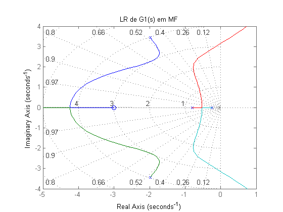
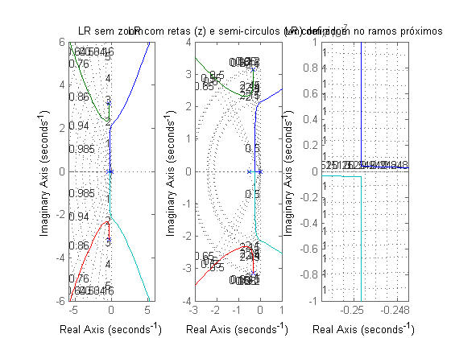
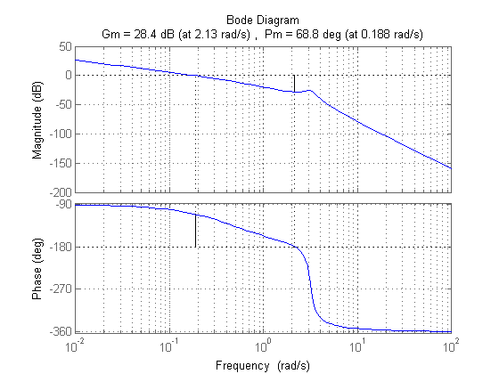

sobre
- Autor: Jonas Vieira de Souza
- Data: 27/09/2018
- Objetivo: Avaliar os lugares das raízes
Contents
configurações iniciais
limpar figuras, variáveis e console
close all;
clear;
clc;
sistema realimentado, caso 1
- raízes da FTMA: polos e zeros
- LR da FTMF
s = tf('s'); G1 = (s + 3)/((s)*(s + 1)*(s^2 + 4*s + 16)); G2 = 1; % FTMF FTMF = feedback(G1,G2) % raízes da FTMA: polos e zeros G1_polos = pole(G1) G1_zeros = zero(G1) % LR da FTMF figure(1); c0 = rlocusplot(FTMF); c0.AxesGrid.Title = 'LR de G1(s) em MF'; axis([-5 1 -4 4]); grid on;
FTMF =
s + 3
-------------------------------
s^4 + 5 s^3 + 20 s^2 + 17 s + 3
Continuous-time transfer function.
G1_polos =
0.0000 + 0.0000i
-2.0000 + 3.4641i
-2.0000 - 3.4641i
-1.0000 + 0.0000i
G1_zeros =
-3

sistema realimentado, caso 2
- determinar os pólos da FTMA
- plotar o LR da FTMA
- verificar contato dos ramos
- determinar margem de ganho
s = tf('s'); FTMA = (1)/ ( (s) * (s + 0.5) * (s^2 + 0.6*s + 10) ); % determinar os pólos da FTMA G2_polo = pole(FTMA) % plotar o LR de FTMA figure(2); subplot(1,3,1); c1 = rlocusplot(FTMA); c1.AxesGrid.Title = 'LR sem zoom'; axis([-6 6 -6 6]); grid on; % plotar LR com retas (z) e semi-circulos (wn) definidas subplot(1,3,2); c3 = rlocusplot(FTMA); c3.AxesGrid.Title = 'LR com retas (z) e semi-circulos (wn) definidos'; array_z = [ 0.05, 0.1, 0.15, 0.2, 0.5, 0.55, 0.6, 0.65 ]; array_wn = [ 0.5, 2.1,2.15, 2.35,2.4,2.45, 3.1, 3.15, 3.2]; sgrid( array_z, array_wn ); axis([-3 1 -4 4]); grid on; % verificar contato dos ramos subplot(1,3,3); c2 = rlocusplot(FTMA); c2.AxesGrid.Title = 'LR com zoom no ramos próximos'; axis([-0.2515 -0.2475 -10^-7 10^-7]); grid on; % determinar margem de ganho figure(3); [G2_ganho] = margin(FTMA) margin(FTMA); grid on;
G2_polo = 0.0000 + 0.0000i -0.3000 + 3.1480i -0.3000 - 3.1480i -0.5000 + 0.0000i G2_ganho = 26.1569 